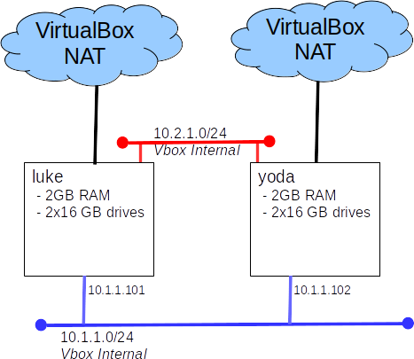

Lab: Intro To DRBD
Introduction
DRBD is software based data replication solution that is commonly used to build small high availability clusters. In the next lab we will build such a cluster. Today we will concentrate just on DRBD.
Recommended O/S:Ubuntu 20.4 LTS (d01 VM is a good place to start)
Part A: Orientation
The DRBD Users Guide, from LINBIT, is an example of an excellently written manual.
- Read the User's Guide for version 9.0
- Install DRBD from Launchpad
add-apt-repository ppa:linbit/linbit-drbd9-stack
apt update
apt install drbd-utils drbd-dkms
Part B: Build a DRBD configuration
Now that you know what DRBD is, it's time to consolidate your knowledge by building a simple test deployment.
Start with this lab configuration:

- Use the red network for DRBD replication traffic
- Use one disk on each node for the O/S and one for DRBD
- Create two replicated volumes, each 4 GB in size
- Mount the DRBD volumes at /ha/data1 and /ha/data2
Notes:
- Follow the LINBIT users guide you reviewed in Part A. Pay particular attention to parts 4 & 6.
- The d01 Ubuntu course appliance is a good starting point for luke and yoda.
- To install on Ubuntu: apt install drbd-utils
- Many drbdadm commands will fail if not run by root. But won't say that's way :(
- To save typing sudo repeatedly, try sudo -i
Part C: Test
Let's see DRBD to it's thing.
- To test what happens if the communication link is severed, "unplug" one of the nodes from the red network.
- What was reported on each node?
- Does the primary still function?
- What happens when the link is restored?
- To simulate a node crash of the secondary, power off the secondary node
- What happened?
- How did you recover?
- To simulate a node crash of the primary, power off the primary node
- What happened?
- How did you recover?
- optional advance: We can simulate a disk failure by removing the disk from the kernel's device table.
# make note of the SCSI ID of our DRBD disk
lsscsi
# use the address we just found to remove the device from the kernel (this change does not survive a reboot)
# NOTE: double check the address
echo 1 > /sys/bus/scsi/devices/3\:0\:0\:0/delete
Part D: Better Tests
The tests we performed in Part C would be much more meaningful if the system was reading and writing from the DRBD volumes. Let's redo those tests, but with some activity on the systems.
- Write a script or program that will create,read, and write files, 'as fast as it can' (or ask your instructor for such a script - see grading for details)
- Re-run the tests from Part C with your script running.
Part E: Grading
This lab is worth a total of 10 points. Grades will be awarded as follows:
- Demonstrate your working configuration to your instructor (10 points)
- This demonstration may take the form of: zoom, recorded video, or the execution of a grading script.
(grading script to be run on luke with both volumes up and mounted)